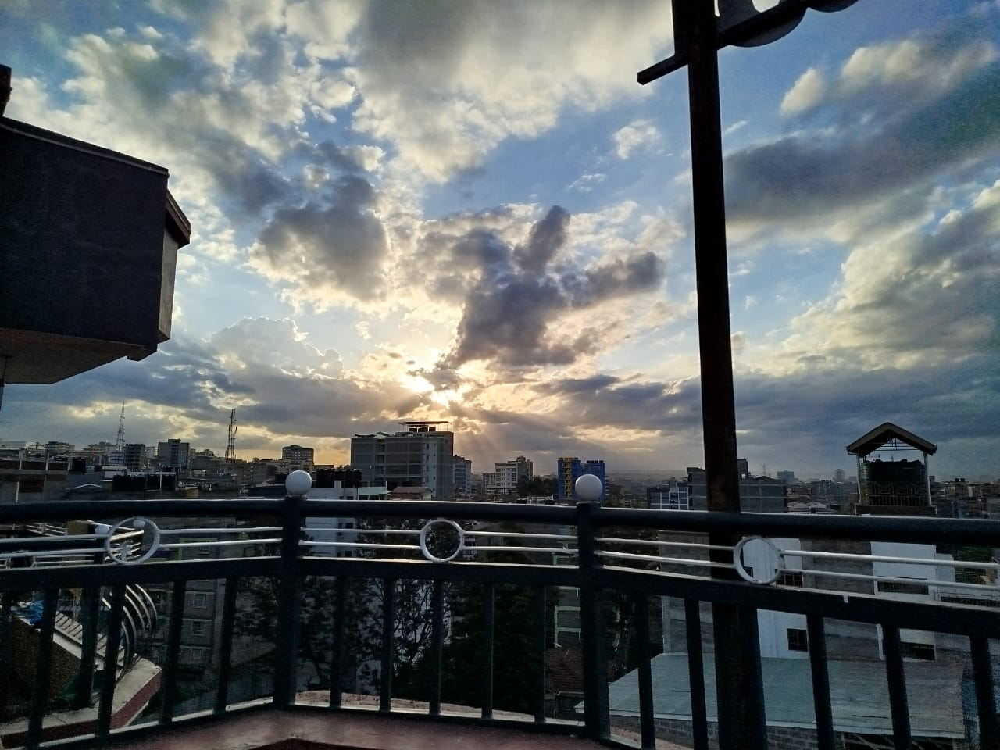
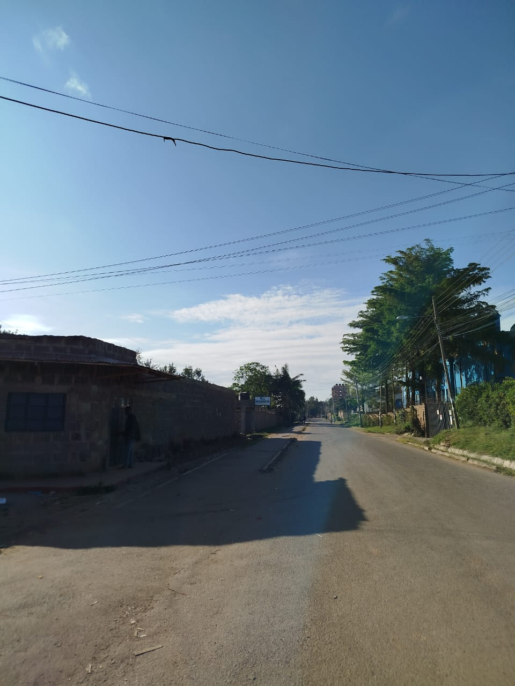
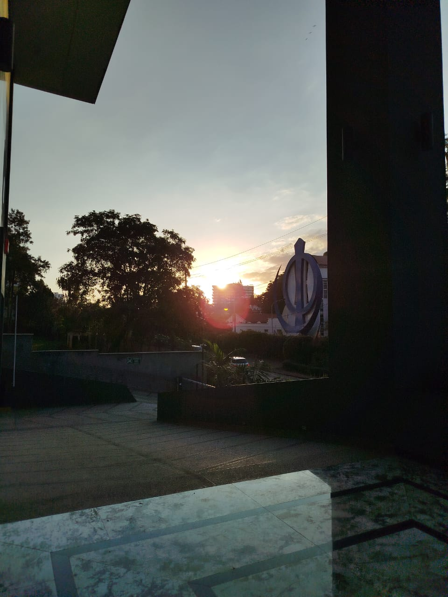
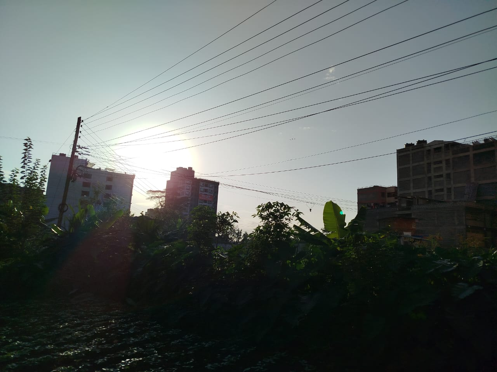
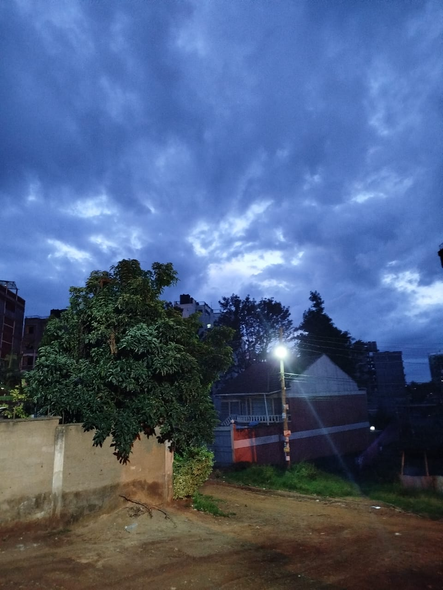
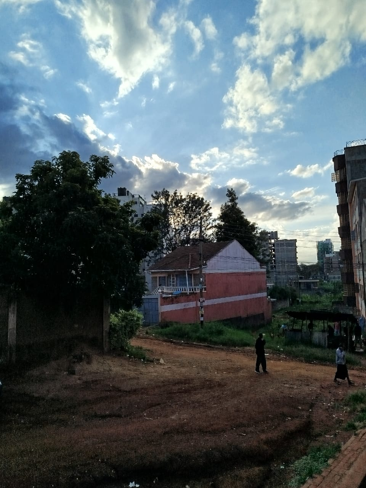

Magnificent!.

The sight of the sky on a clear morning.

The sky on a random evening.

The sight of the sky on a sunny morning.The sight of the sky on a cloudy afternoon.

The sky on a cloudy evening.

The sky on a cloudy ans sunny afternoon.The sky with beautiful clouds.